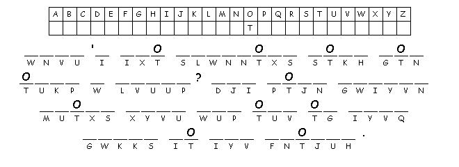

This week's lessons: (Genesis 21:8-21 and Psalm 86:1-10, 16-17 ) or (Jeremiah 20:7-13 and Psalm 69:7-10, (11-15), 16-18), Romans 6:1b-11 , Matthew 10:24-39
Elementary School Pew-work
M S P A R R O W S B E
|
(Matthew 10:29-31 NRSV) Are not two sparrows sold for a penny? Yet not one of them will fall to the ground apart from your Father. {30} And even the hairs of your head are all counted. {31} So do not be afraid; you are of more value than many sparrows. |
Word List |
from http://www.efree.mb.ca/lectionarypuzzles free to distribute for free with this notice. Words are in a straight line left to right or top to bottom |
||
Created by Puzzlemaker at DiscoverySchool.com |
||
1.
Jesus says we should never be afraid of anyone. Why
not?
_____________________________________________________________
2.
What does God know about the birds (the
sparrows)?
_____________________________________________________________
3.
What does God know about our
bodies?
_____________________________________________________________
Questions taken from Sunday School Lessons; http://www.sundayschoollessons.com/baplord.htm
Next week: Genesis 22:1-14 and Psalm 13) or (Jeremiah 28:5-9 and Psalm 89:1-4, 15-18), Romans 6:12-23 , Matthew 10:40-42